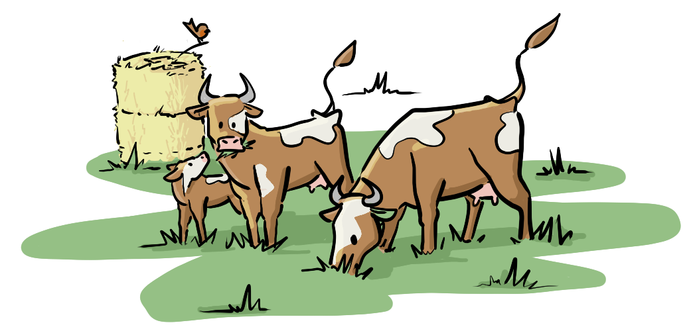

Un troupeau adapté à notre terroir 🐄
Notre ferme accueille un magnifique troupeau composé de 30 vaches mixtes[cite: 1].
Loin des standards de l'agriculture intensive qui pousse les animaux à l'épuisement, nous avons privilégié des races rustiques[cite: 1]. Ces vaches sont naturellement robustes, résistantes aux maladies, et surtout, elles sont parfaitement adaptées aux spécificités et au climat de notre territoire[cite: 1]. Elles vivent au rythme des saisons et profitent d'un mode de vie paisible, en harmonie avec la nature environnante.
Au cœur de l'équilibre de la ferme 🌱
Dans notre vision de l'agroécologie, les vaches ne sont pas qu'un simple atelier de production : elles sont le moteur de la fertilité de nos terres. Elles profitent quotidiennement de nos 35 hectares de prairies pour pâturer librement[cite: 1].
Leur rôle est fondamental dans notre rotation de cultures sur 6 ans : elles se nourrissent sainement de la luzerne et du dactyle que nous cultivons pendant trois ans, et en échange, elles viennent fertiliser le terrain avec leur fumier de manière 100 % naturelle[cite: 1]. C'est un cercle vertueux parfait !
La polyvalence du modèle paysan 🥛🥩
Le choix d'une race dite "mixte" est un symbole fort de la résilience paysanne. Plutôt que d'avoir des vaches hyper-spécialisées uniquement pour le lait ou uniquement pour la viande, nos vaches font les deux, à un rythme naturel.
Elles nous offrent généreusement un lait d'une grande qualité pour notre laiterie, tout en permettant une production de viande savoureuse valorisée par la suite dans notre atelier de boucherie[cite: 1]. C'est un modèle d'élevage éthique, qui respecte le cycle de vie de l'animal et nous assure une belle diversité de produits fermiers.